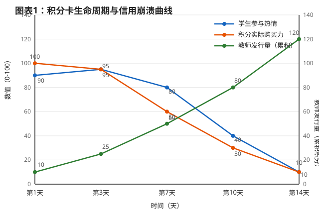
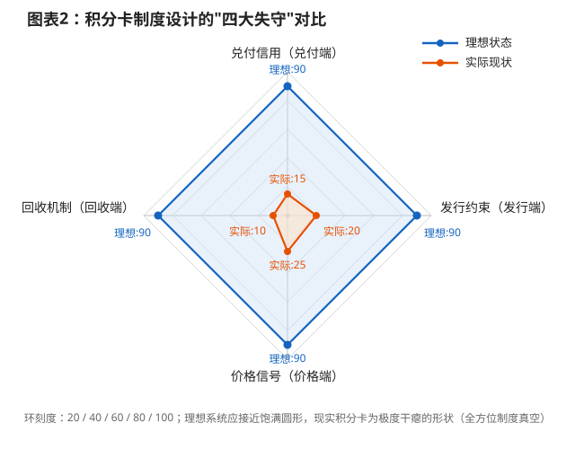

学校奖励积分卡的货币性崩溃：一个制度设计失败的分析
Researcher: Apl_zh
No.3 Middle School Science and Technology Innovation Academy (No.3 AS) · 副策划
（本文为Rubbish期刊精选类学术垃圾）
摘要
学校奖励积分卡通常在发行后两周内丧失激励功能，沦为被学生拒斥的"废纸"。既有讨论多将其归因于物质奖励削弱内在动机，但这一解释无法说明崩溃的速度与普遍性。本文提出，积分卡之所以迅速崩塌，根源不在于"奖励"本身，而在于它被投入流通时已经具备货币的形式，却完全没有被赋予货币的制度基础。从代币制的设计逻辑看，积分卡本质上是"对有限商品组合的索取权"，而非一般化货币；当这一索取权的兑付承诺被随意修改、发行量失去约束、回收渠道阙如、热门兑付品迅速耗尽时，学生的理性反应不是继续合作，而是抢兑、囤积与拒收。金圆券与魏玛马克的崩溃共享同一组制度缺陷：发行纪律缺失、兑付信用不可信、财政/管理需求压倒货币稳定目标。学校积分卡在微型尺度上复现了这一机制，其两周崩溃周期正是"无制度货币"在封闭场景中的标准衰变速度。
关键词：学校积分卡；代币制；货币信用；制度设计；通货膨胀
一、引言
"积分卡两周就废了"几乎是中小学班级管理中反复出现的经验。教师发卡时的预期是：积分作为正向强化物，能够持续引导学生行为；实际轨迹却高度趋同：第一周兑换热情高涨，第二周热门奖品售罄，随后教师加发积分或修改兑换规则，学生开始将积分视作即将作废的凭证，抢兑、私下交易与拒收相继出现，制度事实上终止。
常见的解释是"物质奖励破坏内在动机"。这一批评并非没有依据，但它回答的是"奖励是否应该被使用"，而非"为什么一个被设计出来的奖励系统会在如此短的时间内自我瓦解"。内在动机的侵蚀是一个缓慢的、个体层面的过程；积分卡的崩溃则是一个系统层面的、可预测的制度事件。要理解后者，需要将积分卡从"教育激励工具"的范畴中暂时移出，把它当作一种货币安排来审视。
本文的核心判断是：学校积分卡的崩溃不是"激励不够强"的结果，而是"货币制度缺位"的必然产物。一旦积分可以在学生之间流转、可以兑换稀缺物品或特权，它就不再仅仅是一个条件强化物，而取得了货币的形式。货币形式要求货币制度与之匹配——发行纪律、兑付承诺、回收机制和价格信号。学校积分卡的设计几乎在每一个维度上都处于制度真空状态。金圆券和魏玛马克的类比之所以具有分析价值，不在于学校场景与民族国家具有同等复杂度，而在于两者暴露的是同一组制度变量：当发行者不受约束、兑付承诺可被单方面撤销、且不存在有效的回收渠道时，任何货币形式都会在预期逆转后迅速失去信用。
图表 1：积分卡生命周期与信用崩溃曲线（折线图）
用途：直观展示文章核心观点——积分卡为何在"两周"内失效。数据源：基于文章描述的典型崩溃轨迹模拟。

图表解读：
- 红线（购买力）：随着热门奖品售罄和规则修改，购买力呈断崖式下跌。
- 蓝线（热情）：跟随购买力同步下降，最终导致系统停摆。
- 绿线（发行量）：教师为了维持秩序持续发分，导致"通货膨胀"，发行量与购买力背道而驰。
| 时间（天） | 学生参与热情 （0-100） |
积分实际购买力 （0-100） |
教师发行量 （累积） |
|---|---|---|---|
| 第1天 | 90 | 100 | 10 |
| 第3天 | 95 | 95 | 25 |
| 第7天 | 80 | 60 | 50 |
| 第10天 | 40 | 30 | 80 |
| 第14天 | 10 | 10 | 120 |
二、积分卡的货币属性与代币制的内在张力
代币制在行为分析中有着明确的定义：代币是一种广义条件强化物，本身不具内在价值，其强化效力来自它与后备强化物之间的交换关系。这一界定在实验室或临床情境中运作良好，因为后备强化物的供给、代币的发放频率和兑换比率均由实施者严格控制。然而，学校积分卡的实际运行超出了这一受控框架。
代币制文献本身已经暴露了问题。一项针对课堂代币制临床失败的分析将原因分为三类：代币项目本身的问题、教师执行的问题，以及适用人群的问题。更关键的是，代币制的设计指南中明确列出了"一步骤：planning inflation——计划性通胀。这意味着，在代币制的标准逻辑中，通胀不是意外事故，而是退出策略的一部分：当目标行为已经建立，实施者通过提高兑换价格或逐步撤除后备强化物来弱化代币系统。但在真实的学校场景中，通胀往往不是被"计划"的淡出，而是失控的、被学生提前识别并作出反应的信用事件。教师在没有预先设计退出的情况下增加积分发行或削减兑换品，学生所体验到的不是"逐步淡出"，而是"承诺被撤销"。
一项针对学校封闭货币体系的实证研究提供了一个精确的描述：代币"与其说像一般货币，不如说更像对有限商店商品组合的索取权"（"the token behaved less like general money and more like a claim on a limited shop assortment"）。一旦最有吸引力的商品在早期售出，剩余商品的流动性急剧下降，代币余额停止流通。该研究由此将核心问题定位为流通的失败，而非代币的绝对短缺。这一发现直接指向积分卡崩溃的实质：积分不是在"缺乏奖励"作斗争，而是在与兑付端的结构性稀缺和信用耗竭作斗争。
三、四个制度维度的同时失守
积分卡的崩溃之所以迅速且普遍，是因为它在发行、兑付、回收和价格四个维度上同时缺乏制度约束。任何一个维度的失守都足以削弱货币信用；四者叠加，则使崩溃成为两周内即可完成的确定性事件。
第一，发行端：多主体发行与预算软约束。学校积分卡通常由班主任、任课教师甚至学生干部发放。每一个发放主体都获得即时的管理收益（课堂安静、作业提交、纪律改善），但兑付成本由班级或学校的公共资源承担。这是典型的成本外部化：发行者不承担发行的全部边际成本，因而不存在内生的发行节制。代币制研究早已指出，当代币和后备强化物以非偶然（non-contingent）方式发放时，适当行为反而恶化。当积分变得廉价，其作为行为信号的区分功能同步丧失。更严重的是，一旦学生观察到"表现差也能拿到积分"或"教师为了推进某项临时任务而突击发分"，通胀预期便不再需要真实的过量发行来触发——预期的自我实现足以启动抢兑。
第二，兑付端：承诺的不可信与时间不一致。积分卡的信用完全依赖于一个隐含承诺：持有积分的学生在未来能够以合理的比率换到事先暗示或明示的物品与特权。但这个承诺在法律上不可执行，在制度上也没有任何制衡。教师可以在热门奖品耗尽后宣布"每人限兑一次""该奖品不再补货""积分月底过期"，甚至直接暂停兑换。这正是时间不一致问题的教科书式呈现：发行者在事前有动机作出宽泛承诺以激励行为，在事后则有动机单方面收紧兑付以节约成本。在理性预期下，学生不需要等到承诺被实际撤销才调整行为；他们只需要观察到发行者具有撤销承诺的动机和能力，就会提前作出反应。第一周结束时的抢兑潮，本质上不是对"奖品快没了"的反应，而是对"承诺可能不作数"的定价。
第三，回收端：只有注入，没有回流。稳定货币需要回流机制：税收、罚款、费用、过期作废、拍卖等，使存量货币能够被系统性地回收。学校积分卡几乎不存在制度化的回收渠道。积分只从教师流向学生，很少从学生流回系统。部分教师尝试的"扣分"往往因为教育伦理上的敏感性而难以持续和大规模使用。结果是积分存量单调上升，而兑付品存量固定甚至下降。无需任何复杂的货币理论即可推出：当分子持续增大而分母固定时，单位积分的实际兑付价值必然下降。学生对此的反应是加速 spending——不是因为他们"不珍惜"积分，而是因为持有正在贬值的索取权是不理性的。
第四，价格端：管制价格、选择性需求与黑市的必然出现。积分卡的兑换比率通常不是由供需决定的，而是由教师按照"教育上合适"的原则设定。热门物品（零食、文具、免作业券）定价过低，导致排队和瞬时耗尽；冷门物品定价过高或根本不对学生构成强化，形成库存积压。这种价格结构同时制造了两个后果：热门品的早期枯竭向学生发出"系统正在耗尽"的信号，而冷门品的滞销则意味着发行出去的积分无法通过合意渠道回流。一旦积分在学生之间可以私下交换，一个平行的兑换比率就会出现：用积分换现金、换其他物品、换代劳服务。黑市汇率的存在本身就是官方兑付承诺不可信的公开证据，它会进一步加速官方渠道的弃用。
图表 2：积分卡制度设计的"四大失守"（雷达图）
用途：分析导致崩溃的四个制度维度。分数越低，代表该维度的制度约束越缺失，风险越高。数据源：基于文章第三部分的定性分析量化。

图表解读：
- 理想的积分系统应该是一个饱满的圆形（各项得分高）。
- 现实的积分卡是一个极度干瘪的形状，显示出全方位的制度真空。
| 制度维度 | 理想状态得分 | 实际现状得分 | 核心问题 |
|---|---|---|---|
| 发行约束（发行端） | 90 | 20 | 多主体乱发，无预算约束 |
| 兑付信用（兑付端） | 90 | 15 | 规则随意改，承诺不可信 |
| 回收机制（回收端） | 90 | 10 | 只发不收，存量积压 |
| 价格信号（价格端） | 90 | 25 | 定价脱离供需，黑市出现 |
四、历史类比：机制的对应，而非修辞类比
将学校积分卡与金圆券和魏玛马克并置，容易被视为夸张的修辞。但若聚焦于制度变量的对应关系，类比的精确性反而高于表面上的差异。
金圆券的初始设计并非毫无约束：1948 年 8 月发行时规定了 20 亿元的发行限额，并配合限价政策。崩溃的关键节点是发行限额在不到三个月内被取消。取消的直接驱动力是财政缺口：内战开支迫使政府无法在限额内维持支出，货币发行沦为财政融资工具。与此同时，限价政策压制了价格信号，使兑付承诺（以官价兑换金银外汇）在面临挤兑时不可维持。金圆券的教训不在于"发行了纸币"，而在于当发行者的财政生存需求压倒货币稳定目标时，初始的发行规则只是一层可随时剥去的薄纸。学校积分卡的对应物是：教师的管理需求（维持课堂秩序、推进临时任务）压倒兑付纪律，初始的"积分规则"在奖品耗尽或管理压力下被单方面修改。学生和金圆券持有者一样，不是在看到规则被废除才行动，而在于观察到"发行者可随时改规则"的制度特征后，就提前完成了预期调整。
魏玛马克的崩溃同样根植于财政逻辑：帝国政府不愿通过增税来覆盖战后重建和赔款支出，选择了印钞融资；当印钞速度持续超过货币需求，汇率和物价的崩溃便自我加速。代币制文献中"token inflation"的概念直接对应这一机制：当客户获得代币过于容易时，后备强化物的价格被迫上涨，或代币的实际价值被稀释。学校场景中的"财政赤字"以管理赤字的形式出现：教师需要持续的行为控制资源，但不愿意或无法承担相应的兑付成本（预购奖品、设计有吸引力的特权、维护兑换规则的一致性）。印钞是成本最低的短期融资方式，加发积分也是。两者的共同代价都是货币信用的耗竭。
这一类比还需要一个限定条件，而这个限定条件恰恰强化了分析：金圆券和魏玛马克的崩溃涉及数千万人的预期协调，而一个班级只有几十名学生。协调越容易，崩溃应该越慢，因为学生之间的信息传递和集体行动成本更低——但实际观察到的崩溃速度反而更快。这说明学校积分卡的制度缺陷比历史案例更为集中：没有央行、没有发行准备金、没有独立的兑付审计、没有对规则修改的任何程序性约束。在班级尺度上，所有这些制度环节被压缩为一个教师的个人裁量权。当货币制度的全部环节都系于单个人的即时判断时，信用的衰变不需要宏观冲击，一次奖品耗尽或一句"规则改了"就足够。
| 比较维度 | 学校积分卡（微观） | 金圆券/魏玛马克（宏观） | 共同致死原因 |
|---|---|---|---|
| 发行动机 | 教师为了短期课堂安静 | 政府为了短期财政战争支出 | 管理/财政需求压倒货币稳定 |
| 发行约束 | 无限制，看老师心情 | 限额被取消，无准备金 | 缺乏发行纪律（软预算约束） |
| 兑付承诺 | "下周换奖品"（常跳票） | "可兑换金银外汇"（常管制） | 时间不一致（承诺不可信） |
| 崩溃速度 | 约 2 周 | 数月至数年 | 预期逆转导致抢兑 |
五、结论
学校奖励积分卡的两周崩溃，不是学生"太功利"或教师"执行不力"的道德叙事所能充分解释的。它是一个制度设计问题：积分卡被赋予货币的形式和功能，却没有获得使货币得以存续的最低制度条件——发行约束、兑付承诺的可信性、回流渠道和价格信号。代币制在行为分析中的成功，恰恰以实施者对上述条件的严格控制为前提；当代币制被移植到学校日常管理场景中，这一前提被系统性地忽略了。
金圆券和魏玛马克的类比之所以成立，不是因为学校与国家具有同等的重要性，而是因为它们共享同一组导致货币信用瓦解的因果变量。学校积分卡的独特之处在于，它把这一组变量压缩在一个几十人的封闭空间和两周的时间内，使得制度缺陷的后果以近乎实验室的清晰度显现出来。如果这一分析成立，那么延长积分卡寿命的方向不是"加大奖励力度"或"加强思想教育"，而是把货币制度的最小构件重新装回去：对发行总量设定预算约束，由单一主体审批；对兑付承诺设置程序性修改门槛，而非单方面裁量；建立积分回收渠道（拍卖、费用、过期作废的明确规则）；让热门兑付品的价格反映其稀缺程度，而不是反映"教育上应该值多少"的直觉。在这些制度要件缺位的情况下，任何积分卡——无论设计得多精美——都只是一个两周后到期的短期管理工具，而不是一个可持续的激励系统。
参考文献
- Why classroom token economies fail. Journal of School Psychology, 1974.
- Guidelines for Establishing and Maintaining Token Economies. Intervention in School and Clinic, 1992, 27(3): 164-169.
- A closed-currency experiment in a school setting: circulation, hoarding, and the limits of a token economy. Vilnius University ePublications.
- 吴景平. 金圆券劫局与民心聚散. 2014.
- United States Holocaust Memorial Museum. Reichsbank note, valued at 2 million marks, 1923.
- Calvo, G. From Chronic Inflation to Chronic Deflation. World Bank Conference, 2016.
- Kydland, F. & Prescott, E. Rules Rather than Discretion: The Inconsistency of Optimal Plans. Journal of Political Economy, 1977.（经 Calvo 2016 转引）
- Token inflation and token depression in token economies. Studyres.
- 金圆券发行限额取消与财政赤字货币化. 凤凰财经·央视纪实.